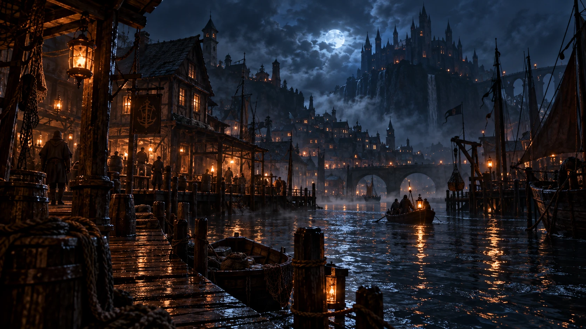
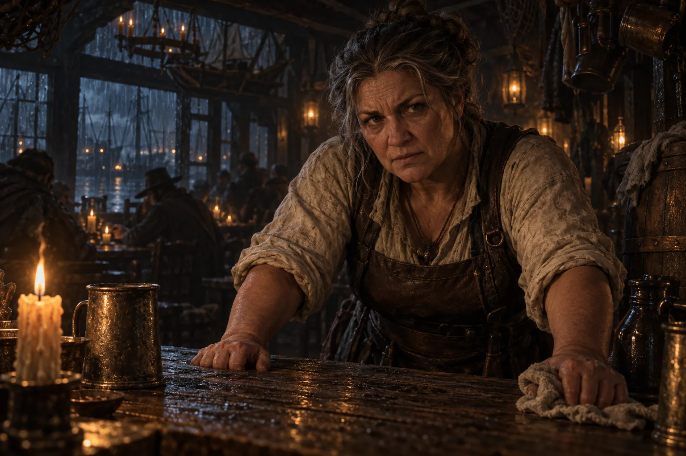
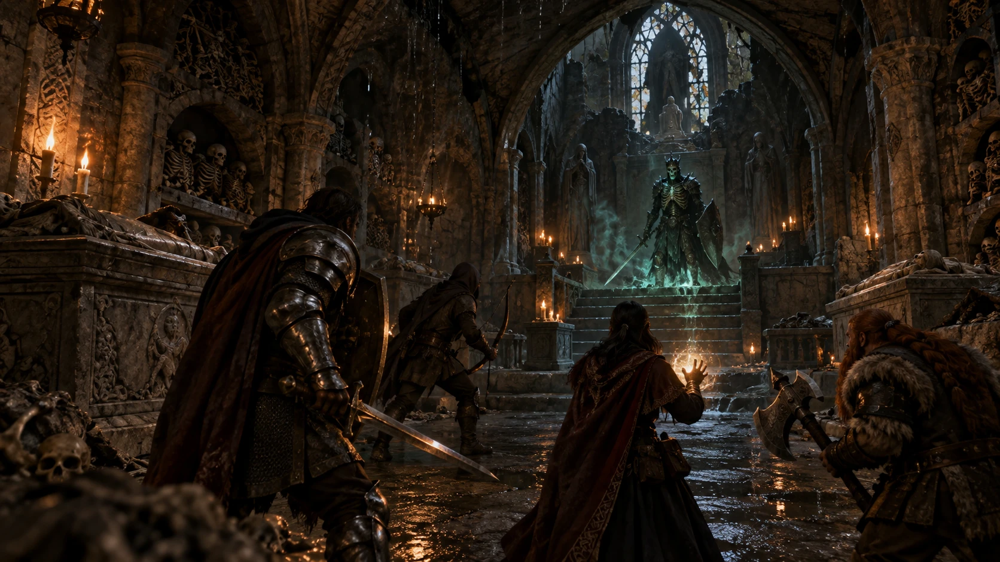
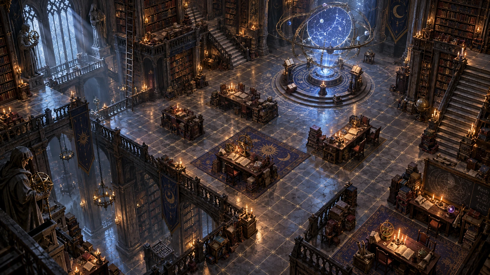

The dungeon master
The dungeon master
Tells the story
- Writes the night around the heroes you made
- Gives every character a voice and a reason
- Describes what the dice decided, never the other way round
- Steers the night toward a real ending

An AI dungeon master for game night
The adventure plays on your TV. Everyone plays from their own phone. The dungeon master tells the story out loud, and every roll of the dice lands where the whole table can see it.
In development. These are concept illustrations, not a playable release.

“Rain drums on the warped roof of the Drowned Lantern. Lanterns sway above the flooded street, and tonight, the lamplighter didn’t come home.”
Act I
The planned experience on a shared display and your own phone, tablet or laptop.
The TV shows a code and the names of everyone who has joined.
You scan it and you are at the table. No sign-up.

Choose a source-supported character build. The server validates its choices and rolls.
Your hero gets a name, a past, and a painted portrait beside the rest of the party.
The dungeon master sets the scene aloud, with music and rain underneath.
Your sheet fills in, ready for your first move.
Tap the microphone and say what your hero says. Your phone offers only the moves that make sense right now.
The barkeep answers in her own voice, and she keeps her secrets until you earn them.
Tap to attack. You see your odds before you commit.
The dice show confirmed results on a tactical battlefield. Optional cinematics can mark the night’s major moments.
Act II
A fixed illustrative example from the original concept. In the game, the server resolves the check; narration follows its result.

“They took him up the bell tower.” She glances at the door. “You didn’t hear it from me.”
Lyria Thalen, elf rogue
Example check: a d20 plus 3 against a difficulty of 12.
A fixed roll of 17, plus 3, gives 20. The server would confirm the result and any permitted consequences before the storyteller speaks. Actual outcomes depend on the rules and situation.
Act III
The design separates rules, campaign direction and narration. The server records the facts; a campaign director guides pacing and threads; the storyteller describes permitted outcomes.
Tells the story
Keeps the score
Each character knows only what they would know. The barkeep cannot let slip where the lamplighter went until someone earns it.
Leave the plot behind and someone from your hero’s past may arrive with a letter. The story finds you through the backstory you started with.
Art, music and video are prepared before the moment that needs them. If something runs late, the game plays on.
 The sunken halls
The sunken halls
The crypt of the lich king
The orrery library The mountain ruins
The mountain ruins The swamp shrine
The swamp shrineWhat you need
The planned game runs in a browser, with a shared-display join flow. Account and guest-access details are still being designed; no new playable release is available yet.
The server will offer source-supported legal choices and explain resolved checks. The target is standard 2024 fifth-edition D&D. Exact book and rules coverage will be tracked; the full rules implementation is still pending.
Campaigns should support as many players as their design and tested server capacity allow. Limits will be published after measurement; there is no new two-player release or unlimited-capacity promise.
Localization is planned for player views and narration. Supported languages and voice quality will be confirmed during implementation.
Consequences stay faithful to the rules. The campaign director can offer new threads and hooks after setbacks, but narration cannot change a confirmed result or force a player’s choice.

Imagine your party, one shared adventure and a world that remembers. Follow the build as the new game takes shape.
Explore the conceptConcept site. The new Rust game is in development.